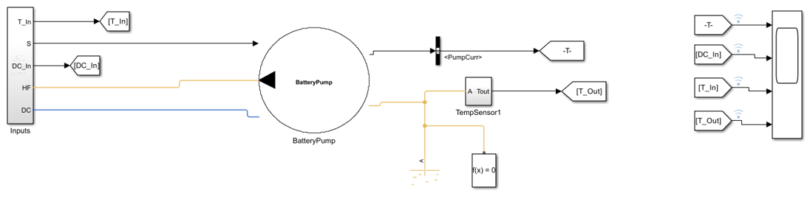
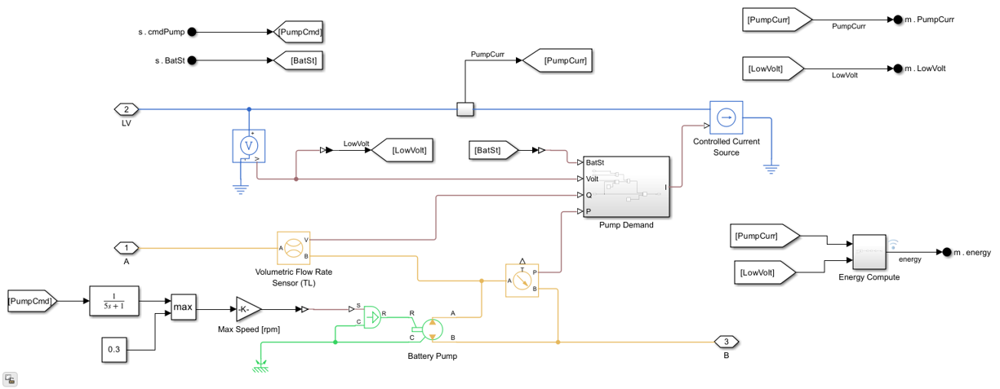

Estimate Vehicle Range with Coolant Pump Loads
Vehicle workflow — Includes pump auxiliary energy in range calculations.
Circulate coolant through vehicle thermal loops
Component path: Components / Pump

Coolant circulation pump component for the BEV thermal management system. The pump drives coolant through the thermal loop connecting the battery, motor drive, charger, chiller, heater, and radiator. Three fidelity levels cover full volumetric pumping through lightweight auxiliary stubs.
Use Pump when coolant flow and hydraulic power are part of the thermal network. Use PumpDummy for a non-thermal auxiliary-load representation, or PumpDummyTh when the coolant loop must remain connected but active pumping is intentionally abstracted.
| Model | Description | Use case | Templates | Documentation & files |
|---|---|---|---|---|
| Pump | Displacement pump driven by the PumpDriver for active flow. | Electro-thermal configurations with a coolant loop requiring active flow. | VehicleElectroThermal | Documentation · Parameters |
| PumpDummy | Fixed electrical load on the LV bus with no coolant ports. | Non-thermal templates or integration testing where no coolant loop is present. | VehicleElecAux | Documentation · Parameters |
| PumpDummyTh | LV load with pass-through coolant ports, no active pumping. | Electro-thermal templates where the pump is not the focus but coolant loop must stay closed. | VehicleElectroThermal | Documentation · Parameters |

Vehicle workflow — Includes pump auxiliary energy in range calculations.
Pump provides full thermal-liquid ports. PumpDummy provides only an electrical interface. PumpDummyTh adds pass-through coolant ports to keep the loop closed.
| Port / signal | Direction | Description |
|---|---|---|
| Pump speed command | Input | Shaft speed from the PumpDriver. |
| Pump command (PumpDummy, PumpDummyTh) | Input | Normalized command (0 = off, 1 = full current draw). |
| LV bus (PumpDummy, PumpDummyTh) | Input | Low-voltage electrical connection. |
| Coolant inlet port (Pump, PumpDummyTh) | Conserving | Thermal-liquid inlet from the coolant loop. |
| Coolant outlet port (Pump, PumpDummyTh) | Output | Pressurized coolant flow to downstream components. |
| Pump power / Pump Current | Output | Mechanical power (Pump) or current drawn from LV bus (Dummy variants). |
Verify volumetric flow and hydraulic pressure under controlled speed inputs.
Run the maintained Pump test case before integration.
Pump Driver | Chiller | Radiator